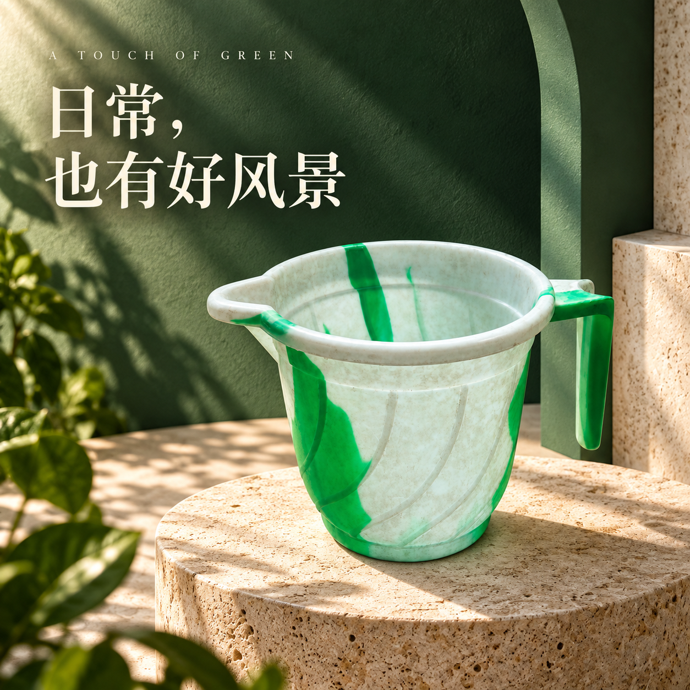

绿白带柄水舀 · hero
已核对 · 待确认品牌广告主视觉：墨绿建筑布景、洞石展台与有层次的日光
 原图参考
原图参考
候选 v1 · 保存图片- 商品一致性 以用户已接受的上一版外观为基线，对照原始图，主要轮廓、左侧导流口、悬空长柄及主要绿白纹路保留；未将布景材质赋予商品。
- 文字 主标题“日常，也有好风景”与 A TOUCH OF GREEN 可读、无遮挡。
- 卖点依据 使用审美标题与可观察的外形特点，没有新增容量、功效、价格或认证。
- 视觉 墨绿布景、洞石与日光形成空间层次；商品与标题主次清楚，关键部件未被遮挡。
- 使用范围 适用于本次品牌视觉／详情特点页示例，不作为有纯白限制的平台主图规则证明。